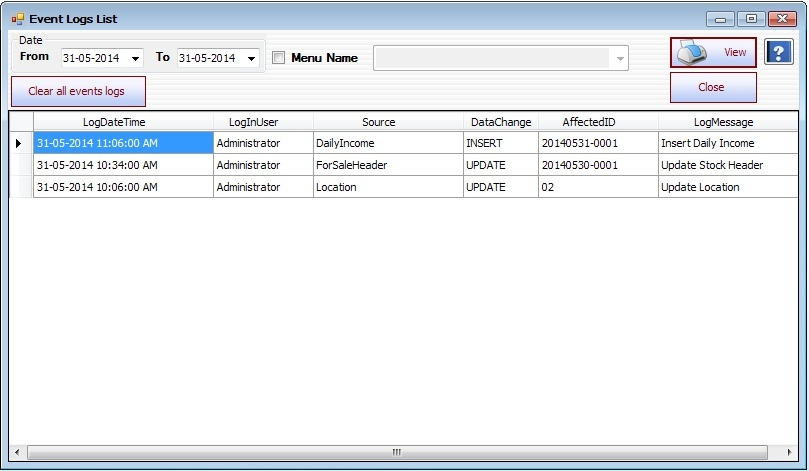

Event Logs Setup

- System Utilities အောက်မှ Security မှ Event Logs Form အားနှိပ်ပါ။
- Audit Logs Form သည် FromDate , ToDate အတွင်း Form များကို Log In User ပေါ်မူတည်ပြီး (Insert, Delete, Update) Transaction များကိုပြပေးသော Form ဖြစ်သည်။
- မိမိကြည့်လိုသော Menu အားရွေးချယ်ပြီး ကြည့်ရှုနိုင်သည်။